Cape Cod Ark Handbook
Earle Barnhart and Hilde Maingay live in the solar house attached to the Cape Cod Ark greenhouse. As long-term researchers at the New Alchemy Institute, they have incorporated many of New Alchemy’s concepts into their house, greenhouse and landscape.
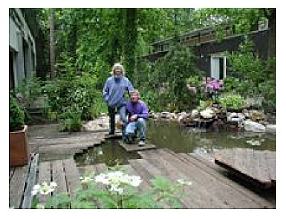
Earle and Hilde are partners in The Great Work Inc.. They design and install ecological landscapes which include food production, wildlife habitat, ponds and methods that promote rich organic soil. They also provide environmental education programs.
They live at the Alchemy Farm cohousing community on Cape Cod, which they helped design and establish.The following is from the Cape Cod Ark Handbook. To download a PDF version of this document, click here.
CAPE COD ARK BIOSHELTER
From 1971 to 1991, the New Alchemy Institute conducted research and education on behalf of the planet. Among its major tasks was the creation of ecologically derived human support systems – renewable energy,Agriculture, aquaculture, housing and landscapes. One of its major achievements was the testing of bioshelters –solar greenhouses which enclosed ecosystems – food crops, fish ponds, soil life, and indoor wildlife to control pests.The Cape Cod Ark is a research bioshelter built in 1976.
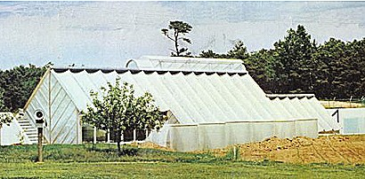The Cape Cod Ark in 1976.
The Ark was an early exploration into ideas of solarheating, winter food production, fish farming, andindoor ecological agriculture. Built as a researchbioshelter in 1976, it was used by New Alchemy tostudy the energy dynamics of solar structures, and the biochemistry and ecology of containedecosystems. The research gradually showed that aspecialized solar greenhouse in our climate couldmaintain a healthy, livable interior climate and could produce fresh food, needing minimal winter fuel.
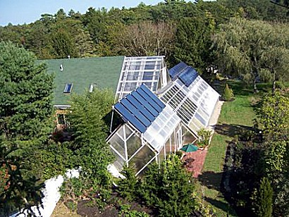
The Cape Cod Ark in 2008.
Cape Cod Ark-House
Sunlight enters all the living spaces, using windows, skylights, glass doors, overhead door transoms and white surfaces.
Sunshine in the morning, mid-day or afternoon will light the whole house.
Click to enlarge
The modular house is very energy efficient, has radiant heat floors, PV solar electricity and both active and passive solar heating. Architect: Atema Architecture NYC

The Ark’s Ecosystem

Light
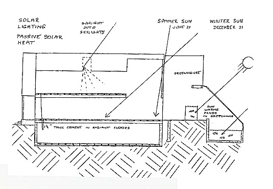
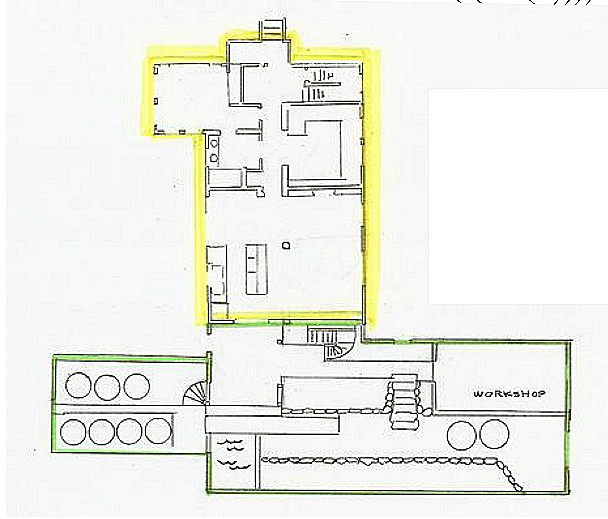
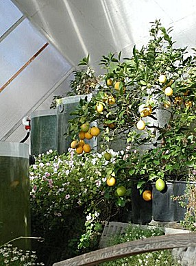Light enters the house from the greenhouse and through windows and skylights. Inside the house is themal mass of furnishings and layers of cement in radiant floors which passively absorb heat all day, and passively release it inside at night.
The greenhouse is designed so that full sunlight falls on most of the plants and ponds throughout the day, coming from many directions and overhead. Some plants can live in shaded conditions or in or reflected-light areas. A few plants can live in light levels of 5-10% full sunlight.
Sunlight that gets through the glazing strikes plants, soil, water, wood, stone masonry, and other surfaces. Most of the sunlight energy entering a bioshelter ends up as heat stored in thermal mass – plants, soil, materials, air or as water vapor in the air.

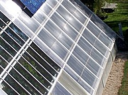Heat
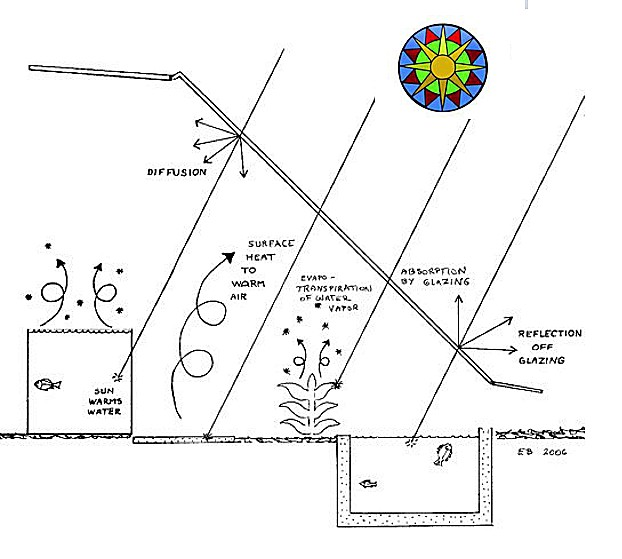When sunlight strikes a material, the material becomes warmer. In a bioshelter, materials like water, soil, stone, cement, and plants absorb incoming solar energy and store it as heat as they warm up. The heat stored in thermal mass is later passively released by radiation or air convection. Passive absorption and release of heat is simple, automatic, and dependable, and requires no machinery.
Sunlight on green plant leaves is mostly absorbed, but most of the energy turns to heat, heating the leaf and evaporating water from the leaf.

Solar Heat

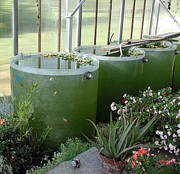Thermal Mass

Heat Management
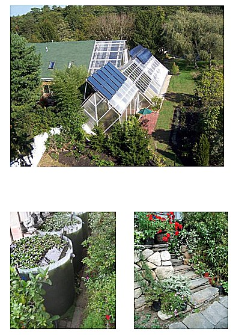The Ark is :
Ark glazing :
- – stone walls and walks, cement foundations,
and cement pavers (880 cubic feet)
- – soil and plants in beds and pots (575 cubic feet)
- – steel framing structures (22 cubic feet)

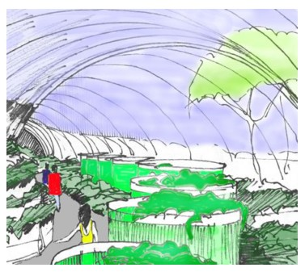Water
1982. New Alchemy Quarterly No.9
“Second Generation Bioshelters”
Inside a bioshelter, no rain falls. Conventional practice, however, is to send the rainwater to a drain and bring in other water to irrigate the plants and soil. Ideally, rainwater should be caught on the roof, channeled inside, and distributed by gravity to the plants, ponds, and soil.
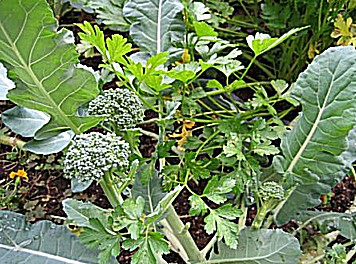 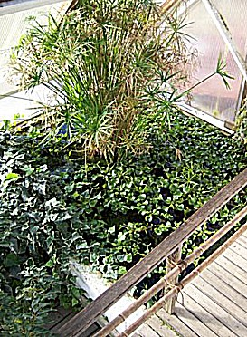
Thee amount of water needed for plants in a greenhouse is roughly equal to 2 inches of rainfall per week, applied to the soil. Most irrigation water is eventually evaporated by plants, with a lesser amount draining downward.
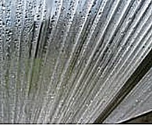Some water vapor eventually leaves the building in ventilation air (summer), or condenses on cold inside surfaces (winter).

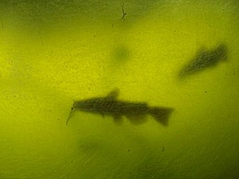Aquaculture Water
Air
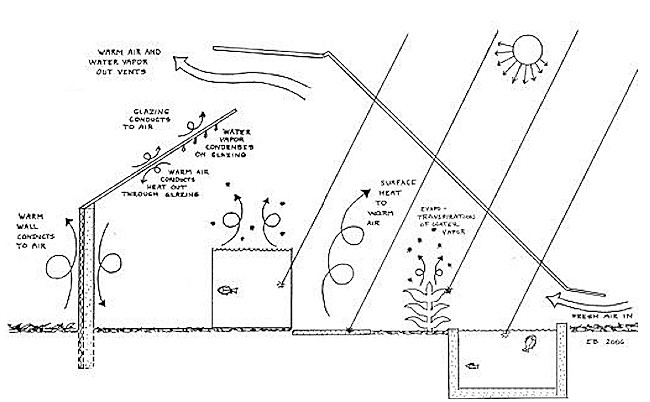
The air in a bioshelter is always moving. Many small, invisible winds are caused by natural convection. On sunny days, solar heated air rises, and cooler air nearby moves to takes its place. On cold nights, heavy cold air flows down the inside surfaces of the glazing as it loses heat out through the glazing. Cold air flows like water and settles in low places. On a cold night, warm air rises from around solar ponds that have been warmed by the day’s sunlight.
While dry air can contain a certain amount of heat, air humid with water vapor can contain much more heat. The heat involved is stored in the water vapor and moves with the air.
Consequently:
- whenever air is vented outdoors, heat energy is also vented out.
- when humid air is vented out, more heat is removed than if it were dry air.
- when water vapor condenses on a cold surface, it loses heat to the cooler surface.
- on winter nights, condensation on cold glazing is one form of heat loss from the building.
Many other gases are in bioshelter air and they also change constantly. Of particular interest is CO2.
Plants take in CO2 in sunny periods as they grow. On bright sunny days plants absorb virtually all of the CO2 from the air that passes by their leaves. A closed greenhouse full of plants can deplete all of the available CO2 by mid-day. Soil in a bioshelter is full of soil life that constantly produces CO2 as they live and eat and grow. When the soil is warmer, soil-life activity increases and more CO2 is produced. Greenhouses containing particularly rich organic soil do not become depleted of CO2 on sunny days. Other studies have shown that plants benefit from higher-than-ambient CO2 levels, and extra CO2 in the air can improve plant growth and partially compensate for low light levels.
Some air pollutants, such as formaldehyde and carbon monoxide, can be removed by plants. As air passes through plant leaves, these toxic gases are metabolized inside the leaf and converted to other less harmful materials. Air inside a bioshelter is continually purified by this process. Air from a house can be passed though a bioshelter and return cleaner.
Fragrances – from citrus blossoms in January, jasmine flowers in June, alyssum flowers year-round – are also part of bioshelter air


{kind=link}
{kind=link}
{kind=link}